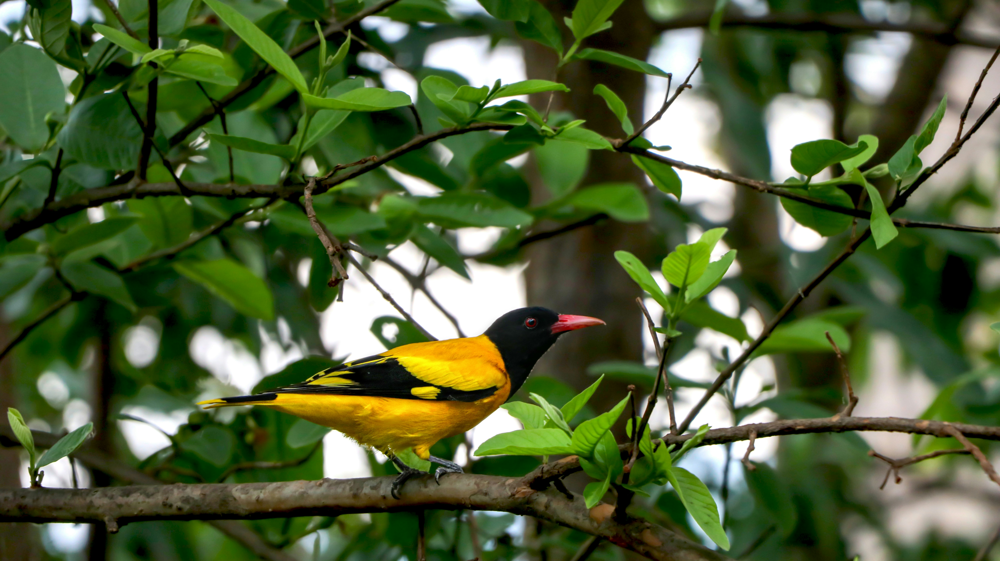

The Black-Hooded Oriole is a striking yellow-and-black bird with a strongly contrasting black head and bright yellow body. It is an arboreal species that spends much of its time in the canopy, feeding on fruits, nectar, and insects. Its melodious whistles are often heard from tall trees. It occurs in forests, plantations, gardens, and wooded urban areas.